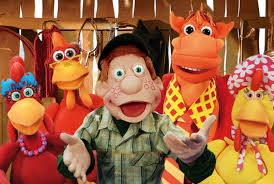
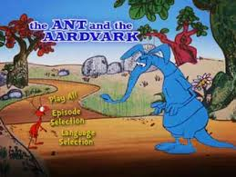
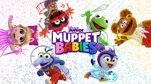
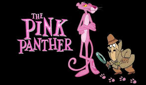
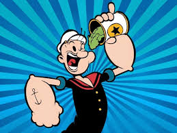
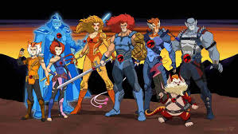

Cocoricó (1996)
Júlio é um menino da cidade grande que adora tocar gaita. Nas férias, ele vai para a casa dos seus avós e fica encantado com a Fazenda Cocoricó, localizada na cidade de Cocoricolândia. A vida na fazenda é bem diferente e o garoto se apaixona pela natureza e pelos animais.
A Formiga e o Tamanduá (1969)
Uma série de desenhos animados em que um tamanduá azul persegue uma formiga vermelha, mas nunca consegue pegá-la. O humor é baseado em perseguições e situações engraçadas.
Muppet Babies (1984)
Apresenta versões infantis dos famosos personagens dos Muppets, como Kermit (Caco), Miss Piggy e Fozzie, vivendo aventuras no berçário da "Nanny" e explorando suas imaginações para criar histórias fantásticas.
A Pantera Cor-de-Rosa (1963)
Desenho famoso pelo humor mudo e elegante. O personagem vive situações cômicas sem falar nada, usando só expressões e trapalhadas, acompanhado da clássica música de Henry Mancini.
Popeye (1929)
Popeye é um marinheiro de desenho animado, criado por Elzie Crisler Segar, que ganha força sobre-humana ao comer espinafre enlatado, e é conhecido por lutar contra vilões como Brutus para proteger sua namorada Olívia Palito.
Thundercats (1985)
Criada por Ted Wolf, a série original de animação estreou em 1985, acompanhando os heróis em suas aventuras contra o maligno Mumm-Ra e outros vilões, enquanto eles buscam as quatro pedras místicas para proteger a Terra.
